Chapter 5. Indicators
This chapter provides an overview of indicators, their main types and key actions involving them. Data collected under different variables are categorized under a set of Early Warning, Alert and Response System (EWARS) indicators. EWARS analyses data according to indicators, and they set the stage for many features in EWARS, including Alarms, Plots, Notebooks, Document Templates, Dashboards, Website Builder and so on.
In EWARS, there are two types of indicators: indicators attached to reporting forms and system indicators that are generated automatically. Indicators attached to reporting forms need to be added to the EWARS Country account and mapped to the relevant forms before they can be used for analysis and in EWARS products.
Data submitted through reporting forms act as the main sources for the indicators. Fig. 5.1 shows an example.
Fig. 5.1. Data flow
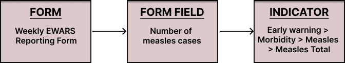
5.1 Types of indicators
There are two types of indicators in EWARS:
indicators based on reporting forms, which are matched with a form field in a reporting form (e.g. suspected cases and deaths);
system indicators, which are not matched with a form or form field but are generated by the system (e.g. completeness, timeliness and so on).
With indicators based on reporting form indicators, mapping of the indicator to the form field happens when a reporting form is set up. Indicators in your system should map to the data that have been collected. Mapping indicators with reporting forms and form fields is explained in Chapter 6. Forms, topic 6.6 Adding logic in the form.
You can also add indicators to the system, based on the data you plan to collect, before setting up a reporting form.
All early warning, alert and response systems have a similar outlook across emergencies. Therefore, the data collected and the indicators they feed into have a common structure.
For a standard set of indicators, refer to the indicators available in the Model account. You can copy the sample indicators from the Model account.
For the sake of convenience, EWARS recommends grouping indicators as shown in Fig. 5.2.
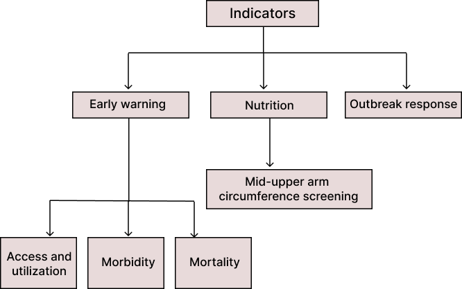
Fig. 5.2. Suggested indicator groups5.1.1 Early warning indicators
Early warning indicators can be grouped into three categories. As standard practice, they are divided into age categories of “under 5” and “5 and over”, and are usually not categorized by sex. These indicators may be:
related to access and utilization (e.g. the number of children under the age of 5 years having consultations at primary health-care centres (PHCCs));
related to morbidity (e.g. the number of children under the age of 5 years with suspected measles, or with suspected viral haemorrhagic fevers (VHFs));
related to mortality (e.g. the number of deaths of children over the age of 5 years from VHFs).
Sample early warning indicators are included in the Model account. You could refer to them and transfer selected ones, as suited to your setting. To transfer them to your account, refer to topic 5.2 Copying sample indicators from the Model account.
If you want to create your own indicators, it is recommended that you follow the indicator groupings shown in Fig. 5.2 in your account.
5.1.2 Nutrition indicators
In some contexts, nutrition indicators are collected as a form of early warning of severe acute malnutrition. Collecting nutrition data using EWARS is not recommended. If used, they should be limited to providing an early warning of severe acute malnutrition and used only for a limited period.
Sample nutrition indicators are included in the Model account. You could refer to them and transfer selected ones, as suited to your setting. To transfer them to your account, refer to topic 5.2 Copying sample indicators from the Model account.
5.1.3 Outbreak response indicators
A lot of case-based data need to be collected during outbreaks. These indicators are grouped as outbreak response indicators, and are different from early warning indicators. They may include, for example, the number of cholera cases with severe dehydration in people aged over 60 years.
Outbreak response indicators may change with the outbreak and the line lists used. Please refer to your outbreak response plan for the specific outbreak to develop appropriate outbreak indicators.
5.1.4 System indicators
System indicators are special purpose indicators. They are not bound to reporting forms but are generated by the system when data are collected (e.g. completeness, timeliness of reporting and similar). System indicators are useful when configuring widgets – for more information, refer to Chapter 17. Widgets and their configuration.
 System System |
indicators are already set up in the system once an account is created. You don’t need to create them. |
You can copy the sample indicators available in the Model account or create new ones, as shown in the following sections.
5.2 Copying sample indicators from the Model account
Follow the steps below to copy the indicators available inside the Model account to your account.
- Select Menu > Configuration Transfer. Select Model account from the Source Account drop-down menu. Select the indicators you want to copy. Click on
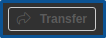
, and the indicators are copied to your account.
Follow the steps below to view the copied indicators.
- Select Menu > Administration > Indicators > click on the folder
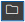
icon to expand the Indicator Group, and the copied indicators are available.
5.3 Creating a new indicator group
The first step in creating indicators is to create an indicator group. An indicator group allows you to organize the related indicators together. You can also create subgroups within an indicator group to organize them into subcategories. Follow the steps below to create an indicator group.
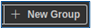
- Select Menu > Administration > Indicators. Click on and the following screen appears:
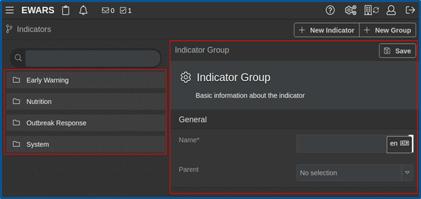
Assume you want to create a laboratory indicator subgroup under the early warning indicator group.
- Enter a Name (e.g. “Lab”) > select a Parent group from the drop-down menu (e.g. Early Warning). Click on Save Change(s), and a notification appears that the group is created.
 Note: if you select a parent group, the new group is created as a subgroup of the parent group. If you do not, the new group is created as a top-level independent group. Note: if you select a parent group, the new group is created as a subgroup of the parent group. If you do not, the new group is created as a top-level independent group. |
5.4 Editing or deleting an indicator group
To edit an indicator group, follow the steps below.
Select Menu > Administration > Indicators > right-click on the name of the Indicator Group > click on Edit.
Make appropriate changes to the Indicator Group > click on Save Change(s), and a notification appears that it is updated.
| Note: the system indicators group cannot be edited or deleted. The following notification appears when you try to delete or edit one: |
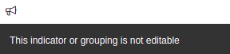
To delete an indicator group, follow the steps below.
- Select Menu > Administration > Indicators > right-click on the name of the Indicator Group. Click on Delete > click on Confirm, and a notification appears that it is deleted.
| Note: if you delete an indicator group, all the subgroups and the indicators present inside the group and its subgroups will also be deleted. |
5.5 Creating indicators
Indicators depend on the data you collect. Therefore, an indicator that is applicable to one setting might not be applicable to another. For example, in some cases, the Under 5 fever and rash cases indicator is important, while in others, Under 5 suspected measles cases is the preferred indicator.
Before creating a new indicator, you need to identify the indicator group to which it belongs. Follow the steps below to create an indicator.
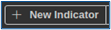
- Select Menu > Administration > Indicators. Click on and the following screen appears:
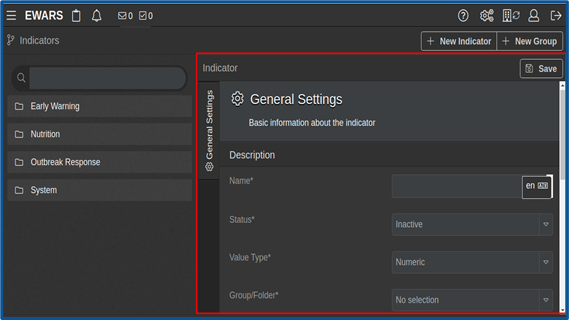
- Populate the details in the general settings tab of the indicator screen as shown below.
Name [Mandatory]: enter the name of the indicator (e.g. “Total suspected measles cases”).
Status [Mandatory]: set as Active.
Active indicators appear with a green bar and are ready to use in features like Alarms, Plot and Mapping.
Inactive indicators appear with a red bar and cannot be used in any features of EWARS.
Value Type [Mandatory]: select numeric from the drop-down menu.
Set as Numeric to hold a numeric value (e.g. the total number of suspected measles cases).
Set as Text if the indicator needs to bind with a text field in a form (e.g. the name of a hazard).
Group/Folder [Mandatory]: select the indicator group or subgroup from the drop-down menu to which the indicator belongs (e.g. total suspected measles cases would belong under the early warning > morbidity indicator group).
Description: enter a description explaining the purpose of the indicator.
Tag: enter a tag for the indicator, click add tag, and the tag is added. Similarly, you can add multiple tags for an indicator. Tags make indicator searching easy when transferring indicators via Configuration Transfer.
- Click on Save Change(s), and a notification appears that the indicator is added.
5.6 Editing an indicator
You can edit the indicator’s name, status and other details.
- Select Menu > Administration > Indicators. Expand the Indicator Group by clicking on the folder icon > right-click on the name of the indicator. Click on Edit, and the following screen appears:
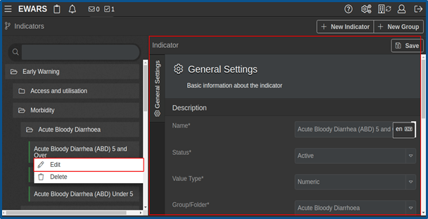
- Edit the indicator details > click on Save Change(s), and a notification appears that it is edited.
5.7 Viewing reporting forms matched with an indicator
Data for each indicator are collected via reporting forms in the system. Linking form fields to indicators is done when creating forms. This is discussed in Chapter 6. Forms, topic 6.6 Adding logic in the form. When such linking has taken place, the form/forms feeding into each indicator is displayed underneath them.
- Select Menu > Administration > Indicators > expand the Indicator Group by clicking on the folder icon. Click on the name of the indicator > scroll down further and you will see the following screen:
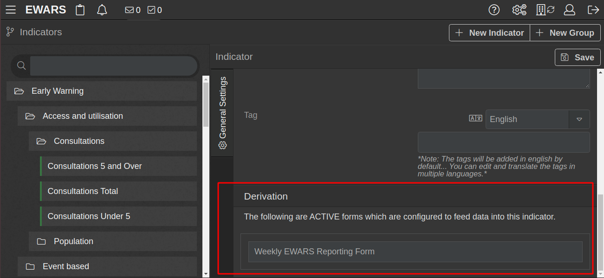
- Derivation shows a list of the form names bound within that indicator. The derivation will only appear after the indicator is mapped to form fields, and it is not editable here.
5.8 System indicators
System indicators are a special set of fixed indicators. These are not bound to any form fields but are calculated automatically by EWARS. You cannot modify or delete the system indicators. They are useful when configuring widgets – for more information, refer to Chapter 17. Widgets and their configuration.
A list of system indicators is shown here and described further below:
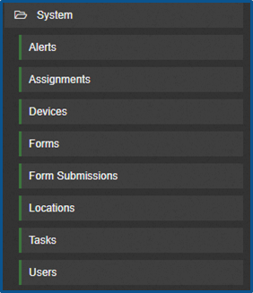
Alerts: the alerts indicator provides a count for alerts based on filters and dimensions, such as closed alerts and similar. For more information, refer to Chapter 13. Alert log.
Assignments: the assignments indicator provides a count of assignments based on filters.
Forms: the forms indicator provides a count of the reporting locations based on filters.
Form Submissions: the form submissions indicator provides a count of submitted reports based on filters and dimensions, such as expected, late and so on.
Locations: the location indicator provides a count of locations, such as active locations and similar.
Users: the users indicator provides a count for users, such as active users, Inactive users and so on.
Table 5.1 lists the filters and dimensions options available for system indicators. These are not visible under the indicators menu but are useful when configuring widgets in Notebooks, Bulletins, Website Builder and so on.
Table 5.1. Filters and dimension options for system indicators
| System indicators | Dimensions |
|---|---|
| Alerts |
|
| Assignments | Form: select a form from the drop-down menu. If set as No selection, the filter does not apply. Status: select an appropriate option to filter by status. If set as No selection, the filter does not apply. Status options are No selection, Active and Inactive. |
| Forms | Form: select a form from the drop-down menu. If set as No selection, the filter does not apply. |
| Form Submissions | Form: select the form. Dimension: select the dimension. If set as No selection, the filter does not apply. |
- Submitted: a count of the reports submitted - Late: a count of the reports submitted after the due date - Expected: a count of the reports to be submitted during the reporting period of the form - Missing: calculated as (Expected – Submitted) - Completeness: indicator value is a percentage, calculated as (100 × Submitted/Expected) - Timeliness: indicator value is a percentage, calculated as (100 × On time/Expected) |
|
Source: select the source. If set as No selection, the filter does not apply. Source options are:
|
|
| Locations | Status: select the locations. If set as No selection, the filter does not apply. Options are:
Location Type: select the location type to filter the locations. If set as No selection, the filter does not apply. |
| Users | Status: select an appropriate option to filter by status. If set as No selection, the filter does not apply. Options are:
User Type: select an appropriate option to filter by user type. If set as No selection, the filter does not apply. Options are:
|
You can now use indicators to analyse data in EWARS – for example, in Plots, Notebooks, Document Templates, Dashboards, Website Builder and so on. Indicators act as an important link between raw data collection in forms, analysis, visualization and, ultimately, timely action. The following chapter gives an overview of the Forms feature in EWARS.